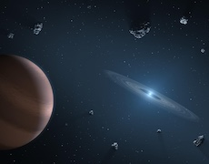
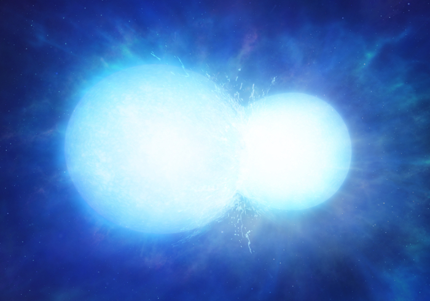
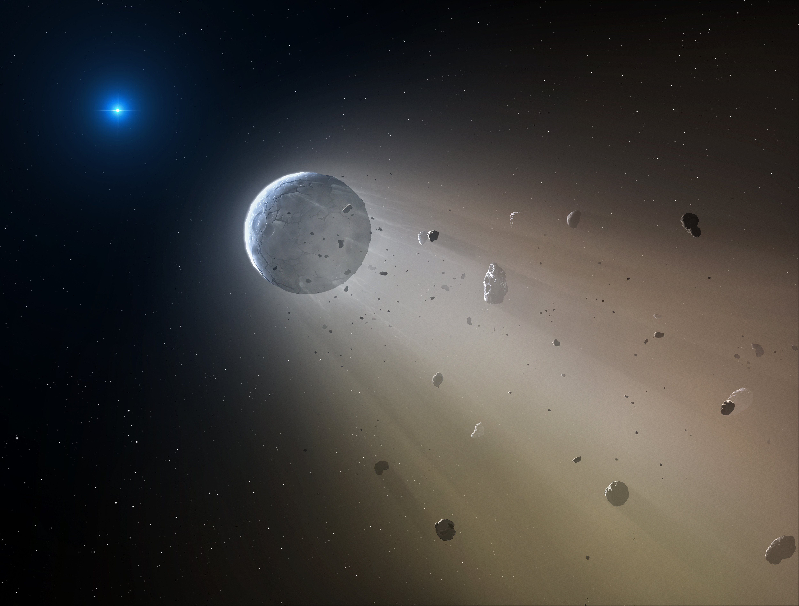
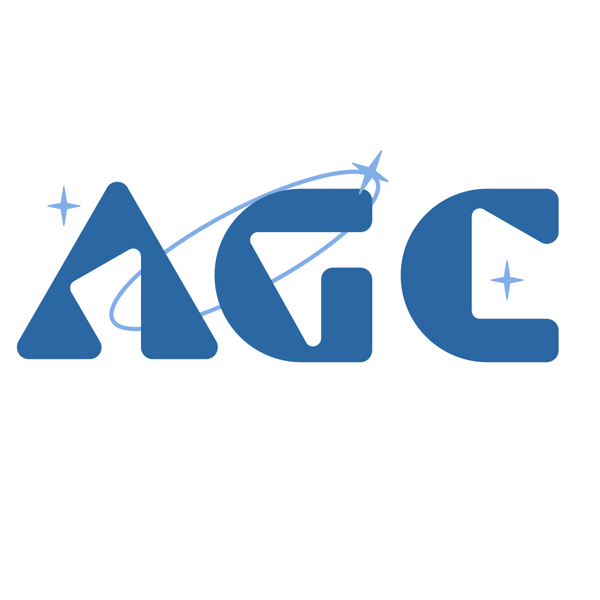
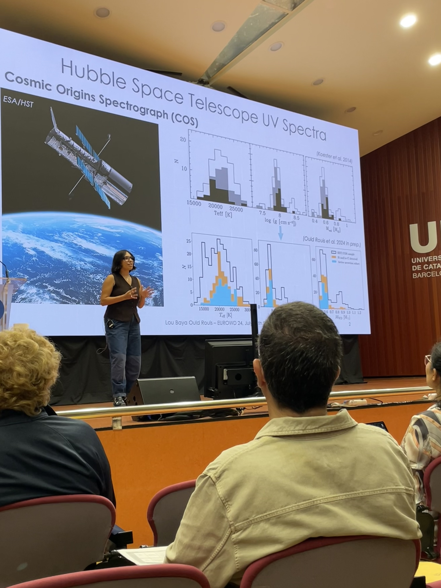
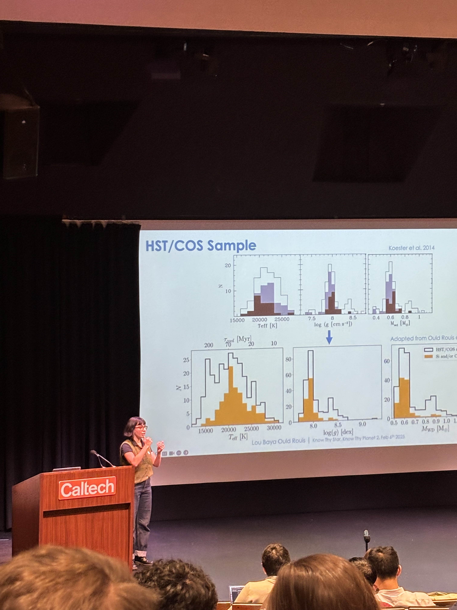

Remnant Planetary Systems
Metal pollution in white dwarfs as a signpost for surviving planetary material.
Observational astronomer; white dwarfs, remnant planetary systems, stellar mergers, galactic archaeology
Email: lbor@bu.edu
I am a 6th year PhD candidate in the BU White Dwarf group, guided by Professor JJ Hermes. I am most interested in massive white dwarfs in the context of remnant planetary systems and stellar mergers.
I am passionate about science communication, DEI efforts, and outreach. I co-founded Inclusive Astronomy at Boston University which aims to coordinate public engagement for underserved communities while fostering community within our department. I also co-founded the Astro Grad Congress to promote inter-departmental discourse.
Born and raised in Paris, France, I seek to connect with others and combine ways of thinking science. Ultimately, I am eager to combine research, teaching, service and public engagement through a career in Academia. Outside of work, I love to wander around cities, ride my bicycle towards bodies of water, explore creative outlets at coffee places, or discover new perspectives through cinema.

Metal pollution in white dwarfs as a signpost for surviving planetary material.

Using kinematics to identify white dwarfs that are the byproducts of stellar mergers.

Reading white dwarf populations as fossil records of the Milky Way's history.
Supporting underrepresented students and faculty in the BU Astronomy Department.

Bringing astronomy outreach directly to Bostonians on the MBTA.

Connecting astronomy graduate students across departments nationwide.
Talks, conferences, telescope trips, and a few things outside of astronomy.

